Day 27｜Melide 章魚、世界盃、停下來的時候
2026 年 6 月 16 日 · Ligonde → Melide · 25km
一早，志工準備了暖心早餐，桌上竟然還有給每個人的手寫卡片，字裡行間滿滿祝福。帶著這份心意出發，心裡真的暖暖的。
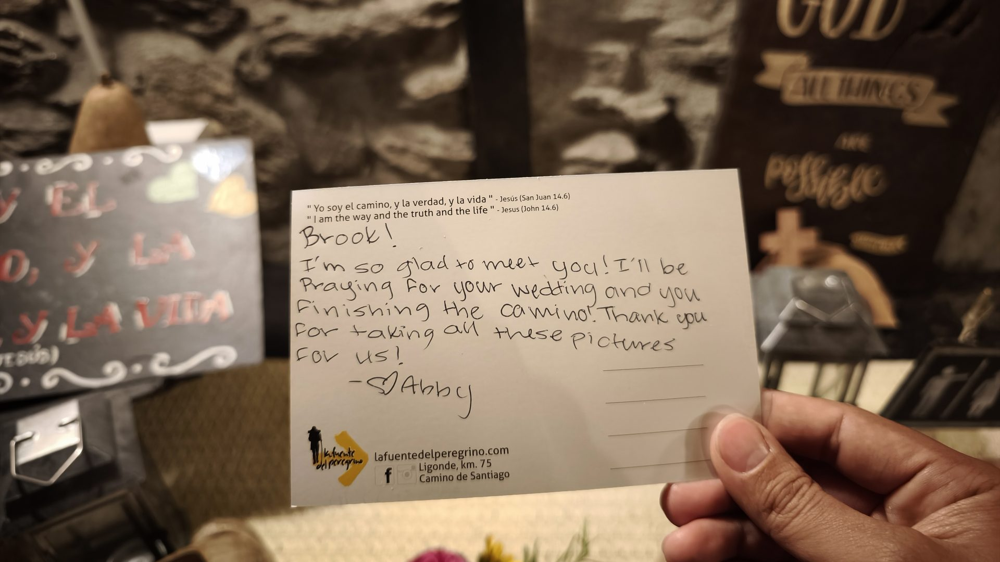
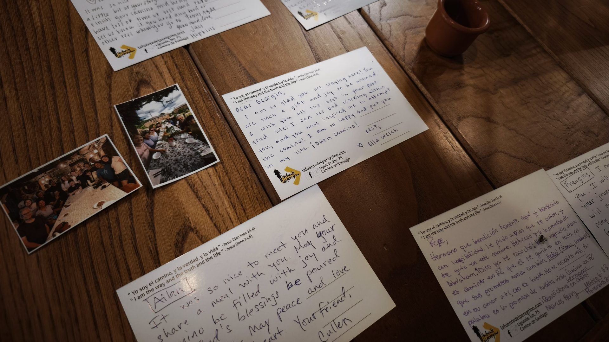
走在路上，甚至能看到朝聖者直接在教堂門口的階梯打地鋪——這就是 Camino 啊！走到哪睡到哪，隨遇而安就是最好的安排。
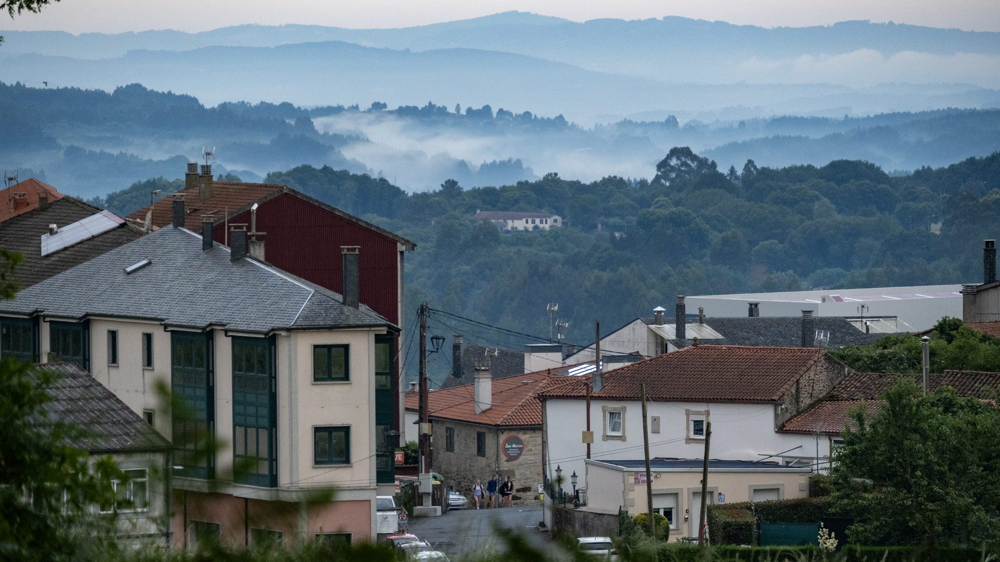
漫長的朝聖路上，總會出現治癒人心的隱藏角色：簡單的吉他聲與歌唱，溫柔地接住了每一個疲憊的朝聖者。
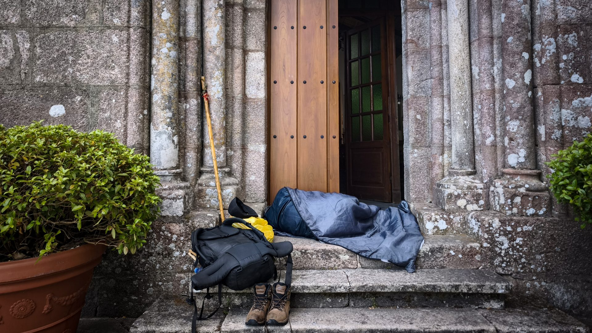
進入最後 100 公里後，遇見一群又一群的年輕學生。看著他們朝氣蓬勃、並肩前行的背影，突然覺得 Camino 正用最純粹的疲憊與汗水，教他們教室裡學不到的堅韌與陪伴。跟著他們的腳步，我的心態也瞬間年輕起來，忍不住一起奔跑，找回那份最純粹的快樂與自由！
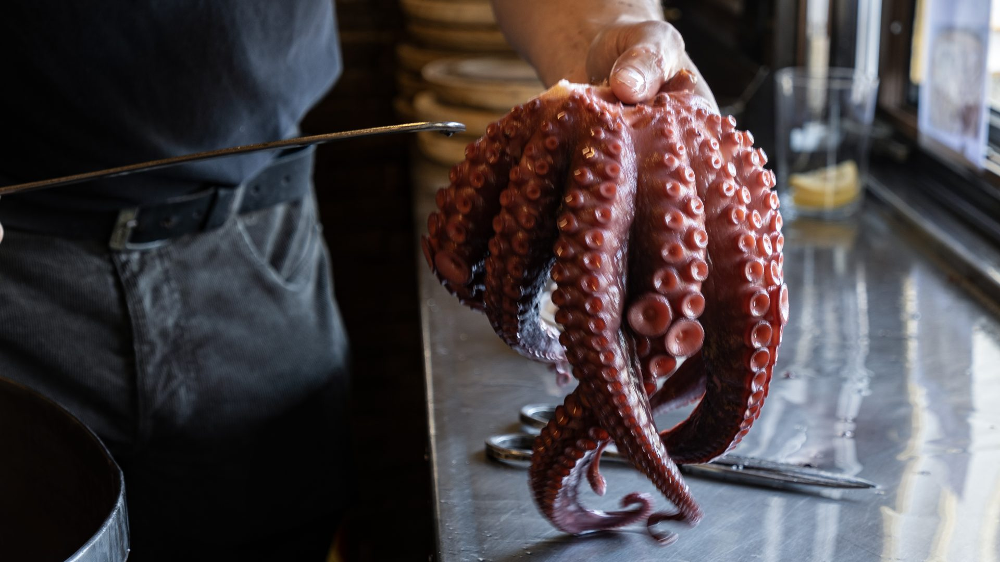
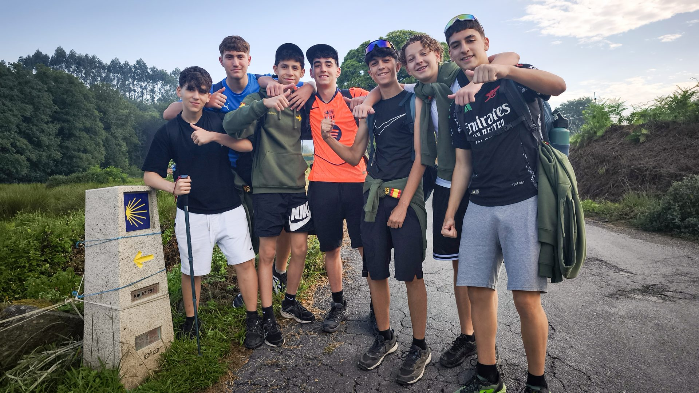
朝聖路上計畫永遠趕不上變化！原本在 Melide 吃完午餐就要出發，但老闆熱情介紹的超巨大新鮮章魚太誘人——更重要的是，今晚可是世界盃西班牙的第一場比賽！決定不走了，今晚就留在這，感受西班牙酒吧最熱血的看球氛圍。
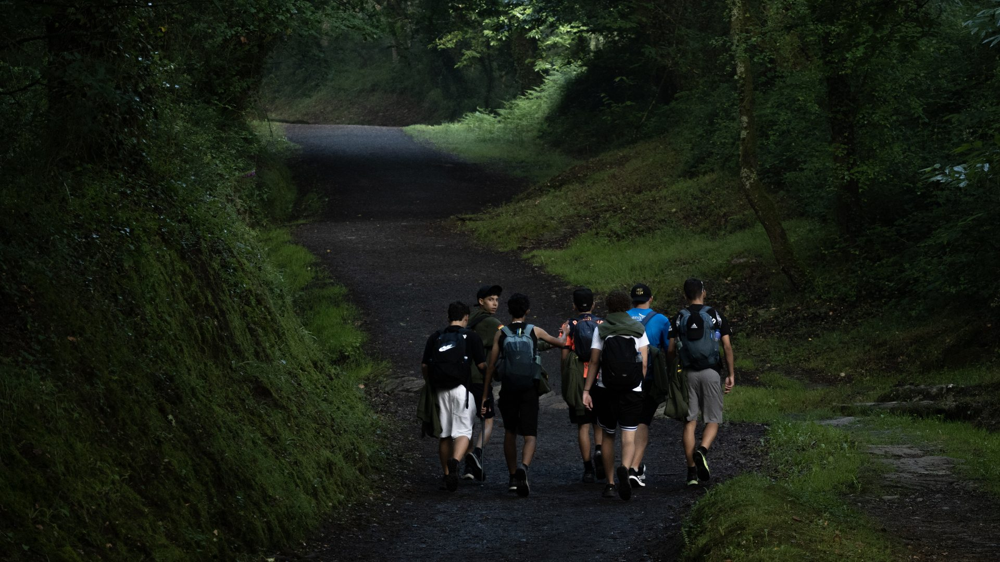
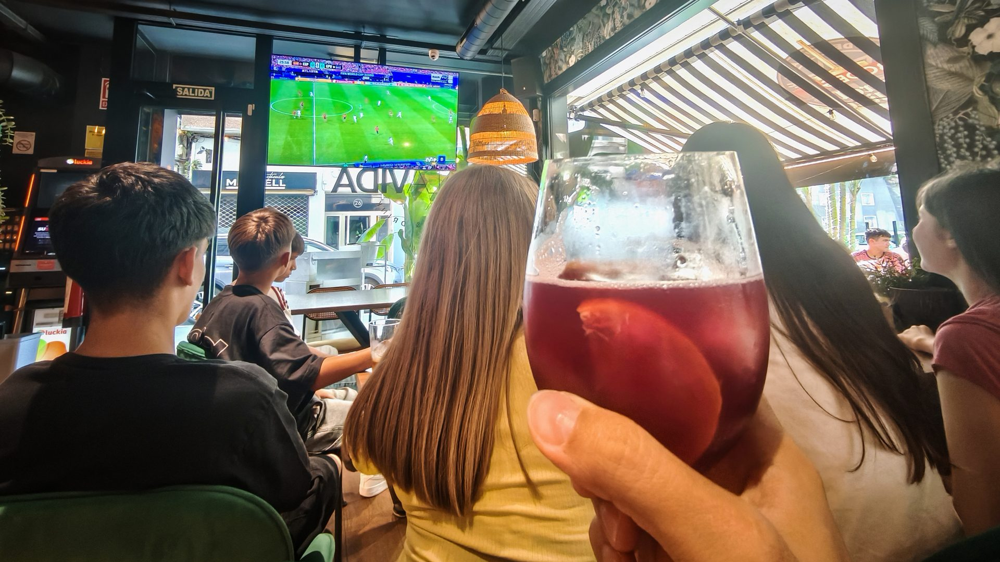
轉戰當地酒吧，跟著滿屋子的人一起看世界盃西班牙的初戰！螢幕上戰況激烈，配著冰涼酒水和酒吧招待的零食，雖然比分一直膠著，但整個酒吧氣氛嗨到不行！在朝聖路上解鎖這種超熱血的在地體驗，真的太值得啦！
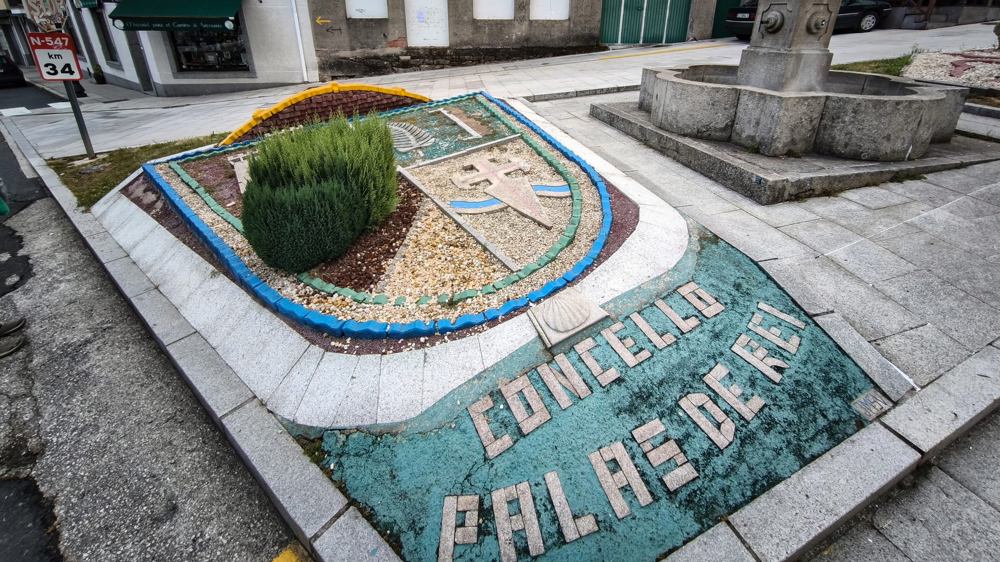
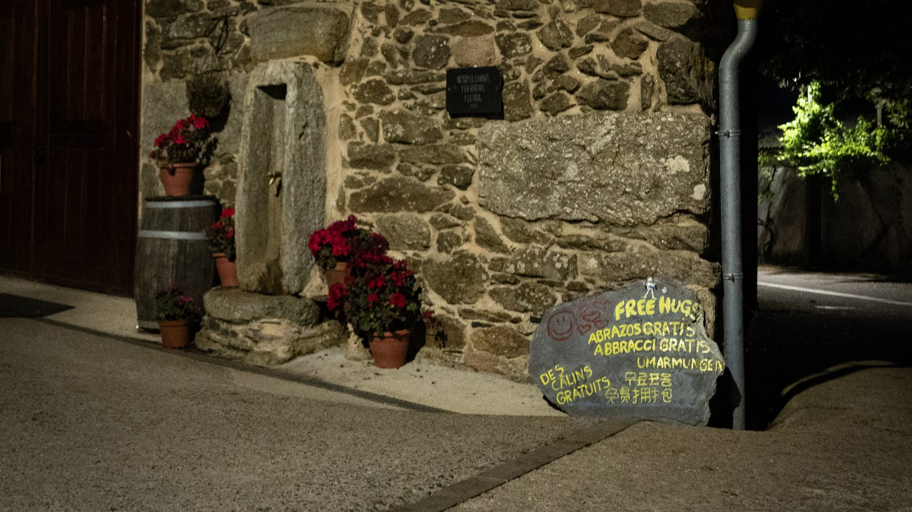
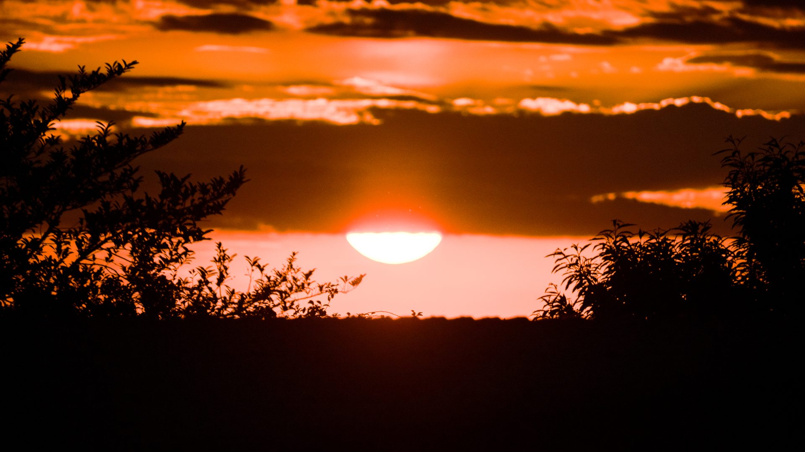
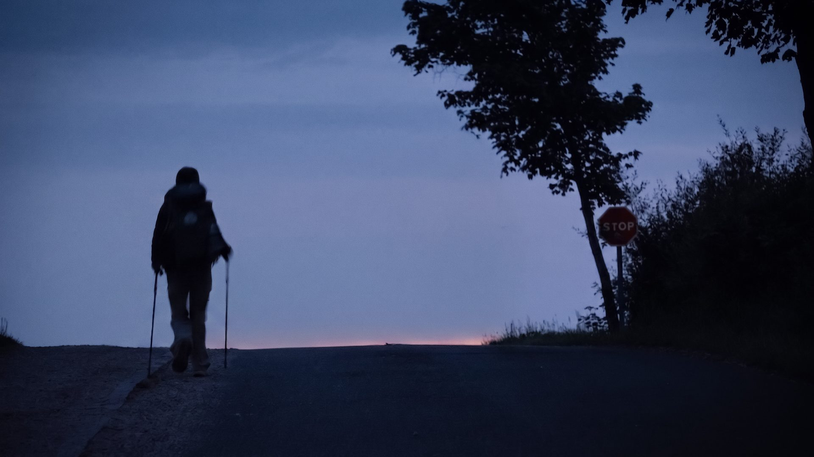
血淚提醒：在酒吧千萬別付現金！不然會找給你滿滿一整把最小面額的硬幣，絕對讓你拿到崩潰！
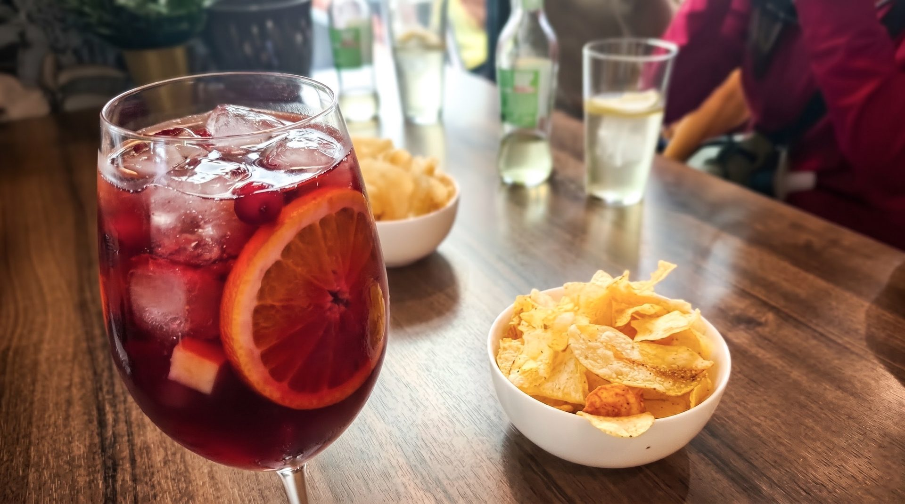
📚 朝聖者小百科：Melide
梅利德（Melide）是加利西亞的章魚之都。Pulpo a la gallega（加利西亞風味章魚）是這裡的靈魂食物——木盤盛裝、橄欖油、紅椒粉、粗鹽，只用四種食材，卻被譽為西班牙最好的海鮮料理之一。章魚在巨大銅鍋裡煮，師傅用剪刀快手切成薄片，木盤上桌。
推薦：Pulpería Ezequiel 和 Pulpería A Garnacha，朝聖者公認的前兩名。配當地 Ribeiro 白酒，絕配。
🐙 Pulpo a la gallega 約 €12-15/盤，一份夠兩個人吃
⚽ 有比賽的夜晚就別趕路了，酒吧氣氛無價
🥾 25km · 章魚配世界盃，停下來的一天
| Bonbon 咖啡烘蛋 | €6.0 |
| 啤酒×2 | €5.2 |
| 住宿 | €10.0 |
| 超市 | €6.0 |
| 朝聖者餐廳 | €11.0 |
| 合計 | €38.2 |
🎬 對應 Vlog EP7｜最後 100 公里：Samos → Santiago 五天全紀錄